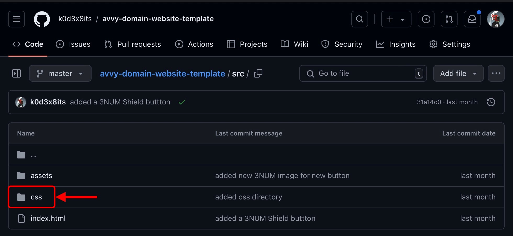
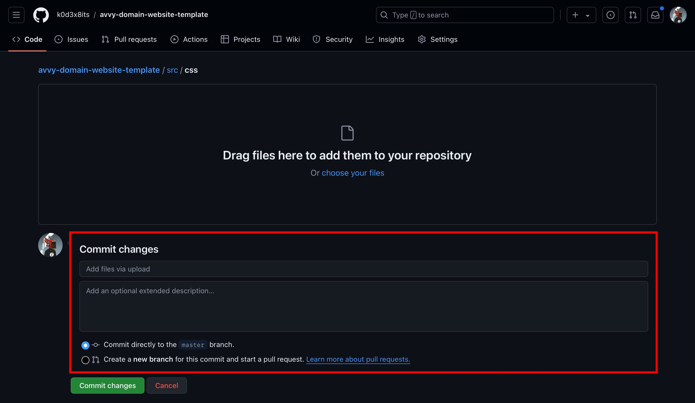
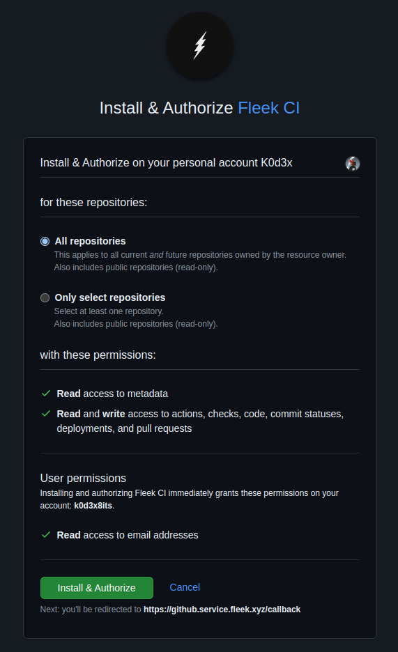
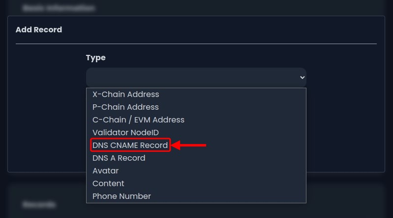

Introduction
In this tutorial you'll learn how to seamlessly create, deploy, and configure a decentralized webstie using GrapesJS, Fleek, GitHub, and Avvy Domains. Avvy Domains provides an address naming system on the Avalanche blockchain which allows you to link your .avax domain to IPFS-hosted content. This ensures your website remians censorship-resistant an decentralized. We'll help you set up an account with GrapesJS, and guide you through GitHub for a seamless deployment to Fleek. Finally, we'll configure your Avvy Domain to point uour IPFS content. By the end of this tutorial you'll have a fully functional decentralized website accessible via your .avax domain.
Prerequisites
- An Avvy domain registered (e.g., webpage.avax)
- Little to no knowledge of HTML/CSS (for GrapesJS)
- A Core wallet or another EVM-compatible wallet
Create a Website with GrapesJS
GrapesJS Introduction
GrapesJS is a web-based, open-source tool designed to make website building easy for everyone, even those without coding knowledge. It offers a user-friendly, drag-and-drop interface where you can create and customize websites by simply dragging elements like text, images, and buttons onto your page. Think of it like a digital canvas where you can visually design and arrange your content, much like using a graphic design tool but for building web pages. GrapesJS provides a variety of pre-built components and templates, allowing you to create professional-looking websites without needing to write a single line of code.
Set up GrapesJS
- Go to the GrapesJS website.
- Click on the “Webpage Demo” button to start the GrapesJS editor.
- Design your website using the drag-and-drop interface.


Download the Website
- Once you have completed your design, click on the “</>” button in the menu bar at the top of the screen.
- In the window that displays you can select "Export to ZIP", in the bottom left corner of the window, to download your website files.
- Find the zip file you just downloaded in your file system (Windows Explorer, Finder, etc) and open it to reveal your HTML and CSS files.
- Create a folder (these are called directories in GitHub) called “src” and put the “index.html” file and CSS folder from Step 1.2.3 into that “src” folder. Your folder structure should mimic the image below.
- Folder structure example

 return to Step 2.4.4
return to Step 2.5.5
return to Step 2.4.4
return to Step 2.5.5
Upload Files to GitHub
GitHub Introduction
GitHub is a web-based platform that allows people to collaborate on projects by managing and sharing files, primarily code, though it's useful for any file type. Think of it as a version control system where you can track changes to your documents, work with others simultaneously, and keep a history of all edits. It’s like Google Docs, but for more complex projects, where every change is recorded, and multiple versions of the project can be worked on and merged together seamlessly. It also fosters community interaction through discussions, issue tracking, and collaborative problem-solving.
Create a GitHub Account
- Go to the GitHub website.
- Add an e-mail address and click the “Sign up for GitHub” button or sign in with an existing account
- Click here to follow GitHub’s tutorial on creating an account.

Create Repository
- Click the “+” button in the top-right corner of the screen within the menubar.
- Choose “New Repository” from the dropdown menu and give it a name relevant to your website.
- Choose your repository to be public or private.
- Check the box to create a README.md. ~> About READMEs
- Check the box to create a License. (optional) ~> About Licensing

Create a src and css Directory
- Click the “Add file” button to the left of the green “</> Code” button.
- Click the "Create new file" button in the dropdown menu that displays.
- A new page displays. Type “src/” in the “Name your file…” section to the right of your repository name. This will create you a “src” folder in GitHub.
- Click the new “Name your file…” section and type “css/”. This will create another folder called “css”.
- Click the new “Name your file…” section and name the file “dummy.file”. GitHub does not allow the creation of empty directories so we must create a dummy file until we can upload the HTML/CSS in the coming step.
- Click the green “Commit changes…” button. A new window displays with another green “Commit changes” button; click it.
- The window will disappear. Click the link titled as your repository name.

 return to Step 3.4.2
return to Step 3.4.2


Upload HTML File to Repository
- Click the "src" directory
- Click the "Add file" button to the left of the "<> Code" button
- From the dropdown menu, click "Upload files".
- Drag and drop "index.html" file from Step 1.2.4 into the browser or click the "choose your files" link to upload the file from Step 1.2.4.
- Below that window is another window titled "Commit Changes"
- In the top section insert a brief description of the upload - ex. uploading HTML file.
- Click the "Commit changes" button.
Upload CSS File to Repository
- Click the "src" directory
- Click the "css" directory 
- Click the "Add file" button next to the "three dots" button.
- From the dropdown menu, click "Upload files".
- Drag and drop the "styles.css" file from Step 1.2.4 into the browser or click the "choose your files" link to upload the file from Step 1.2.4.
- Below that window is another window titled "Commit Changes" 
- In the top section insert a brief description of the upload - ex. uploading CSS file.
- Click the "Commit changes" button.

Upload to Fleek for IPFS Deployment
Fleek Introduction
Fleek is a platform that simplifies the process of creating and hosting websites on the decentralized web. It allows anyone, even those without technical skills, to deploy websites using decentralized technologies like IPFS (InterPlanetary File System) and blockchain. With Fleek you can integrate seamlessly with popular web development frameworks, making it easy to maintain your site while leveraging the benefits of decentralized infrastructure, such as enhanced privacy and control over your data.
Create an Account on Fleek
- Go to the fleek website
- Click the "Create a free account" button.
- Sign up for an account with a wallet or email.
Connect GitHub Account
- Click the "Add new" button in the top-right corner of the screen
- From the dropdown menu, click on "Deploy my site".
- Click the "GitHub" button.
Install Fleek App
- Click the "Install Fleek app on GitHub" button.
- A window populates, representing GitHub, suggesting to install & authorize Fleek CI. 
- Choose the "Only select repositories" option and select the repository, created in Step 2.2, from the "Select repositories" dropdown menu.
- Scroll down, if necessary, and click "Install & Authorize" button.
Upload to IPFS with Fleek
- Click the "Deploy" button to the right of the reposiry you want to deploy to IPFS as your website.
- The window changes to a new display titled "Configure Site". Change the "Publish Directory" section to "src". This is the folder you created in Step 2.3.3,
- Click the "Deploy site" button
- A dashboard will display which provides the status of the initial deployment
- An IPFS hash was generated.
Configure Fleek for Domain
- Click the "Settings" option in the menubar at the top of the website.
- A new page displays with a sidebar to the left. Click the "Domains" option in the sidebar.
- A window to the right of the sidebar displays titled "Custom Domains". Click the "example.com" section to add your domain.
- ex: webpage.avax.sh"
- It will check for availability and then confirm in green text below the provided input - "webpage.avax.sh is available".
- Click the "Add customer domain" button.
- A new window displays titled "Set CNAME Record". Here you will notice a "Value" section. Copy the link, within the "Value" section, to your clipboard. keep this window open. return to Step 4.3.3 return to Step 5.1.1

Configure Your Avvy Domain
Connect Your Wallet
- Go to Avvy Domains website
- Click the "Connect your wallet" button.
Access Avvy Domain Records
- Click the "My Domains" button.
- Click the domain of your choice, and you are then provided the domain configuration page for that domain.
- Look forthe section titled "Records".
- If this is a new domain then you will need to set the resolver. If your resolver is set, then move forward to Step 4.2.4
- Click on the "Set a resolver" link in the "Basic Information section (not shown in image) or click the "Set a resolver" link in the "Records" section (shown in image).
- A new window displays titled "Set Resolver". Change the "Type" section from "None" to "Default Resolver".
- Click the "Submit" button.
- Your preferred wallet will display a transaction user interface for you to approve the transaction initiated by clicking the "Submit" button in the previous step. (A small fee must be paid to make changes to the Avalanche C-Chain).
- Click the "Approve" button to authorize the transaction.
- Click the "Close" button after the transaction has confirmed. Continue to Step 4.2.4
- Click the "Add a record" link in the section previously mentioned in Step "Step 4.2.3"

Add DNS CNAME Record
- A new window displays titled "Add Record". Two sections appear within the window titled "Type" and "Value" respectively.
- Click the "Type" section and a dropdown menu displays.
- In the dropdown menu you will notice multiple record types appear. Choose the "DNS CNAME Record" option. 
- In the "Value" section you will paste the link that was copied from Step 3.5.6
- Click the "Submit" button.
Transaction Approval
- Your preferred wallet will display a transaction user interface asking for you to approve the transaction initiated by clicking the "Submit"button in the previous step (You must pay a small fee to add data to the Avalanche C-Chain).
- Click the "Approve" button to authorize the transaction and add the DNS CNAME to your Avvy domain that was chosen in Step 4.2.2
Deploy .avax Domain
Return to Fleek Settings
- Go back to the Fleek site where you should stil see the window from Step 3.5.6
- Click the "Ok, I have added it" button.
- It will begin to verify the management request.
- Once verification has finished you should see a small, green "Active" sign next to the respected domain.
- Click the three dots to the right of the "Active" sign and a menu displays under it.
- Click the "Visit" button. Your website should load in a new tab.
- You have just deployed your first
.avaxdomain.